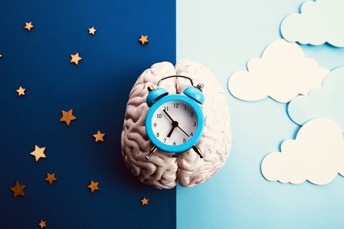

Se coucher et se lever à des heures proches chaque jour.
Sommeil
Le sommeil soutient la mémoire, l’humeur et la motivation.
Les données récentes montrent qu’environ 3 adultes sur 10 dorment moins de 7 heures par nuit, et qu’environ 1 sur 6 a des difficultés à s’endormir.
Le sommeil n’est pas du temps perdu : il consolide les apprentissages, régule l’humeur et aide le corps à récupérer. Quand il est perturbé, l’effet se voit très vite sur les études et l’énergie quotidienne.
Voir plus
☾
Une routine régulière vaut mieux qu’une nuit parfaite de temps en temps.
Bon rythme
Des gestes simples pour mieux récupérer
Le cerveau aime la stabilité. Couchez-vous à des heures proches, réduisez les écrans tardifs et préparez vos affaires avant la nuit.
La National Sleep Foundation a aussi indiqué en 2026 que 95% des parents jugent le bon sommeil essentiel au fonctionnement de la famille, ce qui montre l’importance du sujet dans la vie quotidienne [web:80].
Éviter les écrans lumineux juste avant de dormir.
Préparer les affaires du lendemain pour apaiser l’esprit.
Conseils experts
Améliorer le sommeil sans compliquer la routine
Les recommandations de santé publique reviennent toujours aux mêmes bases : régularité, environnement calme et réduction des stimulants.
Stabilité horaire
Se coucher et se lever à peu près à la même heure aide à ancrer l’horloge biologique. C’est souvent plus efficace qu’une compensation tardive le week-end.
Voir plusRéduire la lumière
Les écrans et les lumières fortes retardent l’endormissement. Une ambiance plus douce pendant la dernière heure avant le coucher aide beaucoup.
Voir plusPréparer demain
Prévoir le sac, les vêtements et le programme du lendemain réduit la charge mentale au moment de dormir.
Voir plus